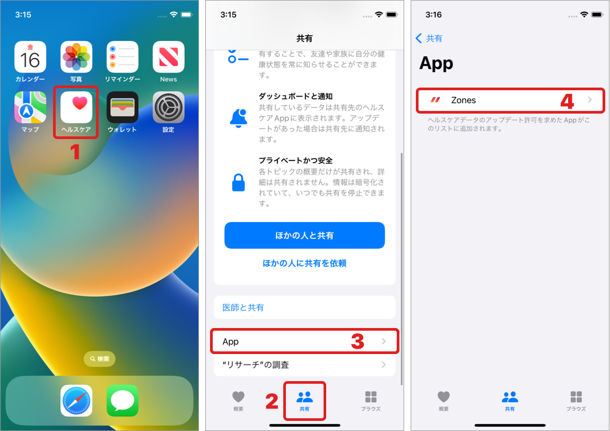
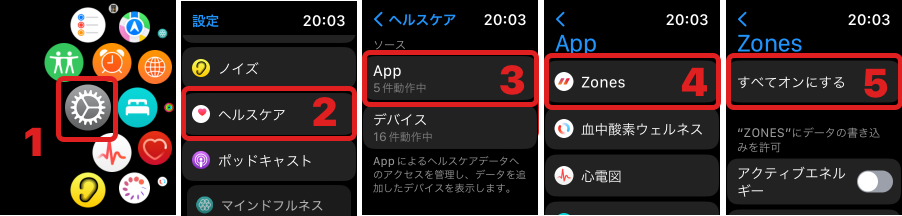
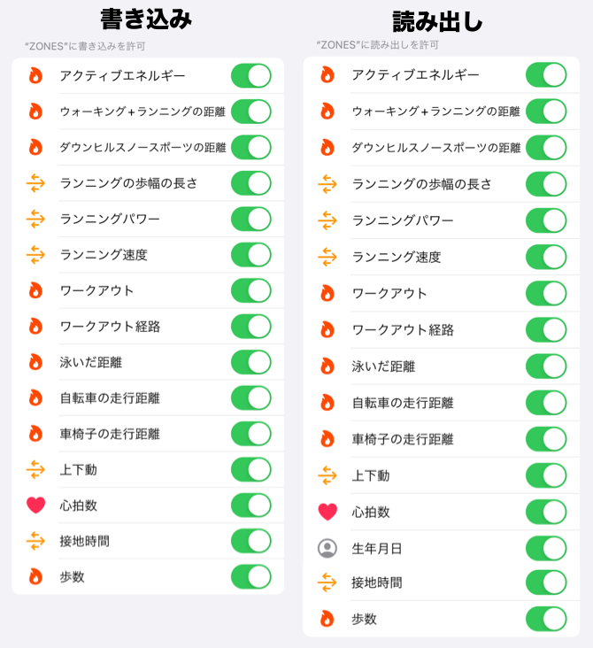

ヘルプ
Apple ヘルスケアへの権限を確認する

ZonesはApple ヘルスケアにデータを保存しています。
アプリ利用時には、権限を許可が必要です。
ご注意
iPhoneとApple Watchの両方でヘルスケアの権限を確認してください。
ヘルスケアの権限設定が、iPhoneとApple Watchとで同期できていない場合があることを確認しています。
例えば、iPhoneのヘルスケアに表示されていない項目が、Apple Watchのヘルスケアに存在し、それが拒否設定になっていた など。
今後のOSアップデートで修正される可能性がありますが、現時点では、両方の端末で設定する以外の解決方法を私たちは見つけられていません。
同期ができていない状態で、Zones v6.0.0 - 6.0.2 を利用した場合、
「毎回ヘルスケアの許可設定が表示される」「全て許可しているはずなのに拒否されているメッセージが表示される」などが発生する場合があります。
そのため、Zones v 6.0.3 では、毎回メッセージを表示しないように修正されましたが、データ欠落を防ぐために、
iPhoneとApple Watchの両方でヘルスケアの権限の確認をお願いいたします。
確認手順
iPhone
iOS 15以降
- iPhoneで「ヘルスケア」アプリを開く
- 「共有」タブをタップ
- 「App」をタップ
- 「Zones」をタップ
- 書き込み/読み出しの許可スイッチを全てON
iOS 13, iOS 14
- iPhoneで「設定」アプリを開く
- 「ヘルスケア」をタップ
- 「データアクセスとデバイス」をタップ
- 「Zones」をタップ
- 書き込み/読み出しの許可スイッチを全てON
Apple Watch
- Apple Watchで「設定」アプリを開く
- 「ヘルスケア」をタップ
- 「App」をタップ
- 「Zones」をタップ
- 書き込み/読み出しの許可スイッチを全てON
問題が解決できない場合
iPhoneとApple Watchのヘルスケア権限を確認しても、ヘルスケア画面に項目が表示されない、許可状態にできない など、問題を解決できない場合は、
以下をお試しください。
1. Zonesアプリを最新にアップデートする
2. 全ての項目を許可リクエストする
この手順は、Zones v 6.0.3 以上、watchOS 8以上 が必要です。
-
iPhoneのZonesアプリで 設定 > プライバシー > ヘルスケア の行をタップする。
未設定の項目がある場合は、ヘルスケアの許可画面が表示されます。 - iPhoneで、Zonesのヘルスケア設定を再度確認する。
-
Apple WatchのZonesアプリで 設定 > プライバシー > ヘルスケアの 「認証する」のボタンをタップする。
未設定の項目がある場合は、ヘルスケアの許可画面が表示されます。 - Apple Watchで、Zonesのヘルスケア設定を再度確認する
お使いの環境によっては、この手順を行なっても全ての許可リクエストが行えない場合があります。
3. ヘルスケアの許可設定を初期化する
上記(2)を行なっても問題を解決できない場合は、 「Zonesアプリの再インストール」 もしくは 「位置情報とプライバシーのリセット」を行い、ヘルスケアの許可を最初から行なってください。
Zonesアプリの再インストール
アプリを削除すると、心拍ゾーンなどの設定情報、カスタムワークアウト、PROの購入情報が削除されますのでご注意ください。
PROの購入情報は、復元することが可能です。
- iPhoneで、Zonesを削除する
- Apple Watchで、Zonesを削除する
- iPhoneで、Zonesをインストールする
- iPhoneでZonesを起動し、ヘルスケアの権限設定で全てONで設定する
- Apple Watchで、Zonesアプリをインストールする
位置情報とプライバシーのリセット
位置情報とプライバシーのリセットをすると、Zones以外の情報もリセットされますのでご注意ください。
- iPhoneの設定 > 一般 > 転送またはiPhoneをリセット > リセット > 位置情報とプライバシーをリセット
- iPhoneでZonesを起動し、ヘルスケアの権限設定で全てONで設定する
ヘルス設定項目
iOS 16, Zones 6.0 の時の全項目
関連情報
- Apple サポート: iPhone や iPod touch でヘルスケア App を使う
- Apple サポート: iPhone、iPod touch、Apple Watch で複数のデータソースから集めたヘルスケアデータを管理する